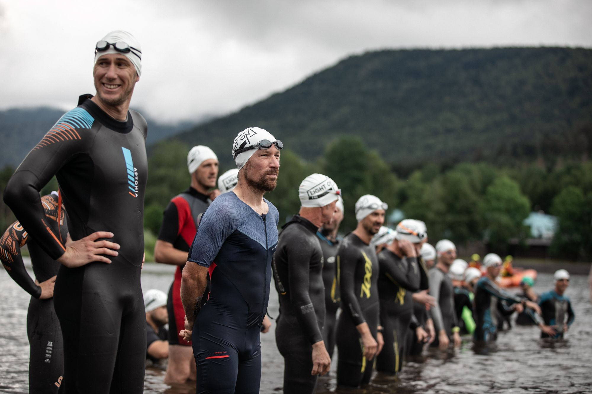
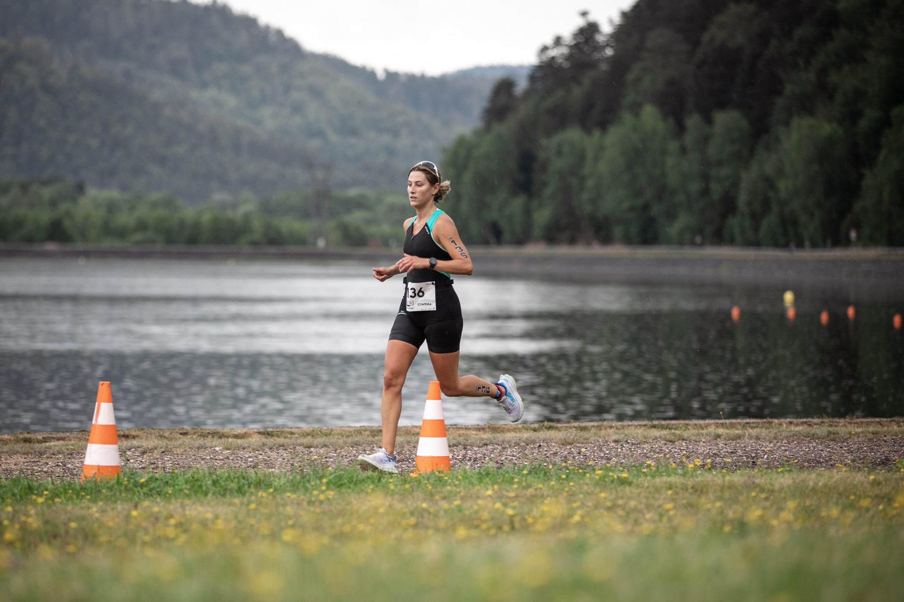
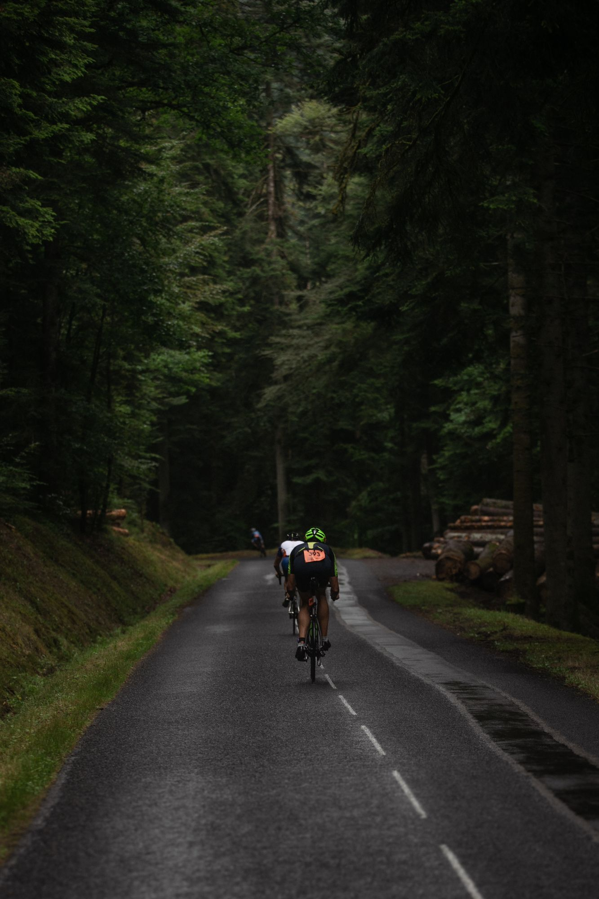
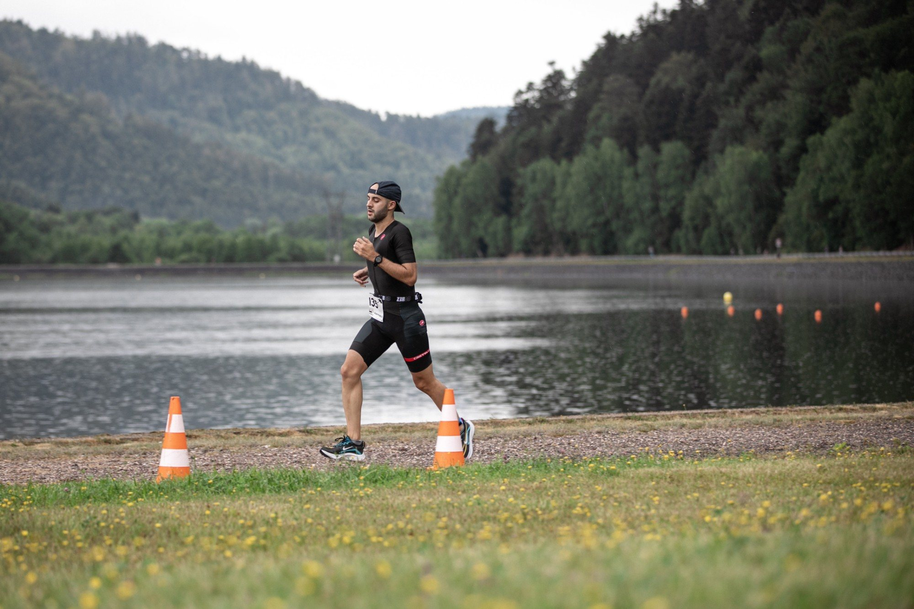
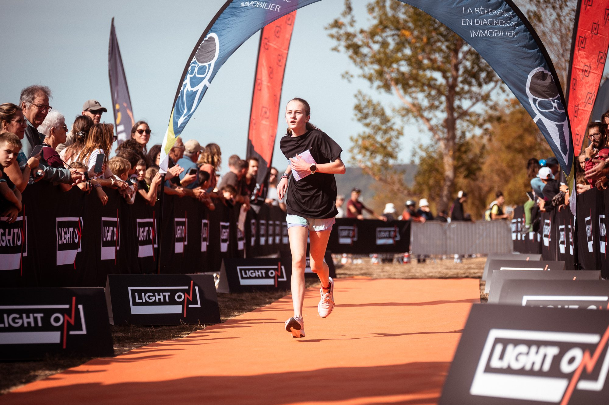

MiniKids
Duathlon · nés de 2018 à 2021250 m1 km250 m
Course à pied, vélo, course à pied : un premier duathlon à la taille des plus petits.
S'inscrire
Le triathlon revient au lac de Pierre-Percée, entre Nancy et Strasbourg. L*** le samedi, S* et M** le dimanche, les enfants et le RUN 5 KM entre les deux.
Le LIGHT ON TRI Pierre-Percée*** 2027 a lieu du 11 au 13 juin 2027, entre le lac de Pierre-Percée (natation) et le lac de la Plaine à Celles-sur-Plaine (Village LIGHT ON et arrivée) : triathlon L*** le samedi 12 juin, triathlons S* et M** le dimanche 13 juin, plus MiniKids, Kids et RUN 5 KM.
Même parcours en deux lacs, trois distances. Le détail de chaque parcours est juste en dessous.
| S* | M** | L*** | |
|---|---|---|---|
| Départ | Dimanche 13 juin · 9h00 | Dimanche 13 juin · 13h30 | Samedi 12 juin · 9h30 |
| Natation | 0,5 km | 1,5 km | 1,9 km |
| Vélo | 20 km | 40 km | 90 km |
| Course à pied | 5 km | 10 km | 21,1 km |
| Tarif | 39 € licencié · 44 € non-licencié | 64 € licencié · 74 € non-licencié | 129 € licencié · 144 € non-licencié |
| Temps limite | Aucun temps limite | Fin du vélo à 3h00 après le départ | Fin de la natation à 1h10, fin du vélo à 5h30 après le départ |
| Âge minimum | Cadet (né en 2011 et avant) | Junior (né en 2009 et avant) | Junior (né en 2009 et avant) |
Glissez pour voir tous les formats
Et aussi : MiniKids · Kids · RUN 5 KM.
Format court, proche du sprint
Le dimanche matin, au bord du lac, les sapins en toile de fond. Le bon format pour découvrir le triathlon sans y passer la journée.
Une boucle de 500 m dans le lac de Pierre-Percée, départ sur la plage.
Du parc à vélo du lac de Pierre-Percée (T1) jusqu'au Village LIGHT ON, au lac de la Plaine (T2). Tracé 2027 détaillé dans le guide participant.
Au départ du Village LIGHT ON, au bord du lac de la Plaine. Tracé 2027 détaillé dans le guide participant.
Natation, vélo, course à pied : les tracés du Triathlon S* de Pierre-Percée, à zoomer tranquillement avant le jour J.

Distance olympique
La distance olympique le dimanche après-midi. Le temps de faire une grasse matinée, ou de venir encourager les copains du S*.
Deux boucles de 750 m dans le lac de Pierre-Percée, avec sortie à l'australienne.
Du parc à vélo du lac de Pierre-Percée (T1) jusqu'au Village LIGHT ON, au lac de la Plaine (T2). Tracé 2027 détaillé dans le guide participant.
Au départ du Village LIGHT ON, au bord du lac de la Plaine. Tracé 2027 détaillé dans le guide participant.
Natation, vélo, course à pied : les tracés du Triathlon M** de Pierre-Percée, à zoomer tranquillement avant le jour J.

Longue distance, format half
Le gros morceau du week-end, le samedi à 9h30. 1,9 km dans le lac, 90 km de vélo, un semi pour finir. Le dimanche, vous avez le droit de ne rien faire.
Deux boucles de 950 m dans le lac de Pierre-Percée, avec sortie à l'australienne.
Du parc à vélo du lac de Pierre-Percée (T1) jusqu'au Village LIGHT ON, au lac de la Plaine (T2). Tracé 2027 détaillé dans le guide participant.
Au départ du Village LIGHT ON, au bord du lac de la Plaine. Tracé 2027 détaillé dans le guide participant.
Natation, vélo, course à pied : les tracés du Triathlon L*** de Pierre-Percée, à zoomer tranquillement avant le jour J.

Pas encore de retours sur ce parcours en deux lacs. Les premiers, ce sera vous : on a hâte de lire vos impressions.
Des courses pour les enfants et une course à pied sans transition : de quoi embarquer ceux qui vous accompagnent.
Course à pied, vélo, course à pied : un premier duathlon à la taille des plus petits.
S'inscrireLe même enchaînement, en plus long. Les parents sont autorisés à crier très fort.
S'inscrire5 km au bord du lac en fin d'après-midi, sans combinaison ni vélo à préparer.
S'inscrireÀ venir : les parcours duathlon seront disponibles prochainement.
Tracé RUN 5 KM

Les inscriptions se font uniquement en ligne, sur Njuko, et les places sont limitées sur chaque format.
Une ou plusieurs : à partir de 2 triathlons, le pack s'applique tout seul.
Licence de triathlon, ou certificat médical de moins d'un an à déposer au plus tard 15 jours avant.
La veille ou le jour J selon votre course, avec une pièce d'identité.
Un empêchement ? Transfert de dossard possible jusqu'à 48h avant le premier retrait (3 €). Pack annulation à prendre à l'inscription : 10 € sur le M**, 15 € sur le L***.
Du 11 au 13 juin 2027 à Pierre-Percée. Inscriptions ouvertes.